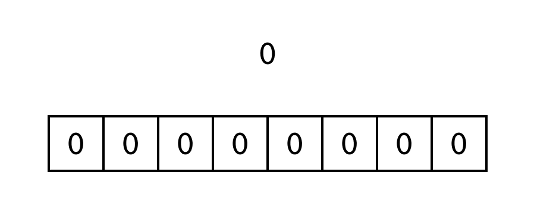
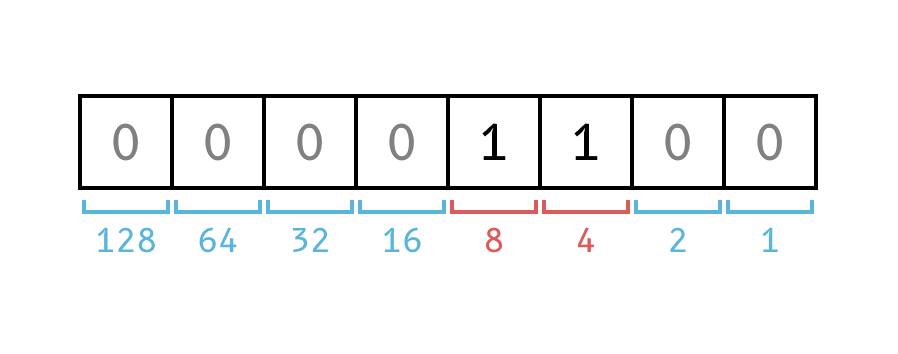
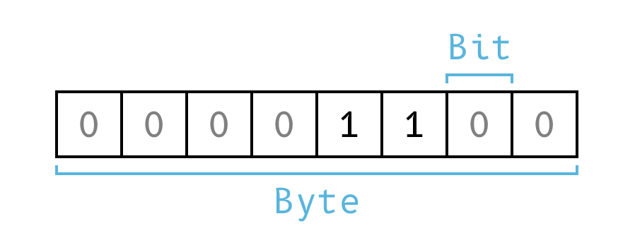

Epochalypse: When computers travel back in time
There is a computer bug waiting to jump at us in about 14 years. Watch out for it, or you'll suddenly find yourself back in the year 1901.

Earlier this year, I created a countdown website [1] for the Epochalypse and posted it to Mastodon. [2] To my surprise, it gained quite some traction. Someone later posted it to Hacker News, where it was the top page for the better part of the day. [3] It appears that it sensitized quite a few people to the problem who hadn't been aware of it before. Motivated by this fact, I now finally have the time to write this accompanying post explaining the issue.
The Epochalypse, [4] which is sometimes referred to as Y2038, Y2K38, or the year 2038 problem, is a software bug that, if unaddressed, will lead to some software programs crashing or confusing dates in the future with dates in the past. Put simply, it means that on the 19th of January 2038, affected programs may crash, or their clock will jump back to the 13th of December 1901.
That sounds like Y2K
Before going into the Y2038 problem, let's take a brief look at what the Y2K problem at the turn of the millennium was all about. Because the Epochalypse is actually quite similar in nature to the year 2000 problem, knowing about Y2K helps to understand the underlying issue.
The lead paragraph of its Wikipedia article [5] does a good job of explaining the cause of Y2K.
Many programs represented four-digit years with only the final two digits, making the year 2000 indistinguishable from 1900. Computer systems' inability to distinguish dates correctly had the potential to bring down worldwide infrastructures for computer reliant industries.
Basically, if you were to write down dates, but shorten the years to two digits (1998 → 98), how is a computer supposed to know which century you are referring to? It was assumed that many programs implied the date to be in the 20th century, which is why turning from 99 to 00 would potentially be considered the year 1900, not 2000.
Explaining the Y2038 problem, especially to less-technical folks, is slightly more challenging than explaining Y2K because it requires a basic understanding of binary numbers, data types, and the Unix epoch. In the next section, I will attempt to provide this explanation. At the end, I will give some tips to software engineers about what to look out for when handling Unix time in software code.
Background information
Computers work with numbers, not dates, not alphabetical characters, not symbols; it's all about numbers. You could go deeper than that, but for the purpose of explaining the Y2038 problem, going to the electrical engineering level is not necessary.
Binary numbers
You may think of numbers in their decimal representation, with digits from 0 to 9; those are also called decimals. Computers think of numbers in binary, [6] from 0 to 1; those are called bits. Understanding how binary numbers work is best shown with a simple counter.

At closer inspection, the pattern becomes quite obvious: the right-most bit is of the least significance, while every bit to the left stands for double the value of its neighbor to the right.
From left to right, when a bit is set to 1, it stands for the following decimal numbers.

When multiple bits are set to 1, getting to the decimal number is simply achieved by doing a basic addition of all the numbers that were set to 1.
The byte 00001100 means 12, because the active bits stand for the
numbers 8 and 4 respectively, the sum of both is 12.
Bytes
It is no coincidence that I wrote the binary numbers above with eight digits each. A byte is a number that consists of 8 bits. It can be in 256 different states; a single byte is therefore simply a number between 0 and 255.

Computers are all about bytes, and thus all about numbers, as was mentioned at the beginning of this explanation.
To reach a number beyond 255, we simply have to use more bytes. With two bytes (16 bits), we can already represent numbers up to 65535. Representing numbers below 0 is more tricky, so let's get into data types.
Data types
A data type in a programming language specifies what the underlying bytes actually represent, and they do a lot of the heavy lifting so that developers don't have to constantly think about binary numbers (they usually don't).
There are a few different data types, and they vary between systems and programming languages, but the most basic are:
- Boolean (true or false)
- Integer (non-fractional numbers, e.g., 12)
- Float (fractional numbers, e.g., 3.1415)
The data type we are concerned with here is integers. They can be of various sizes, and they can be signed or unsigned. A signed integer can represent negative numbers because one bit (typically the most significant bit; read “first bit”) is used to denote whether the number is negative or not. This comes at a cost because we are “losing” one bit that can no longer be used for the number itself.
Remember how the 8-bit number above was able to represent anything between 0 and 255? That's because we interpreted that byte as an unsigned 8-bit integer.
If we wanted to represent negative numbers with that single byte, we would have to use the first bit to define whether the number is negative.
| Byte | Signed | Unsigned |
|---|---|---|
00000000 |
0 | 0 |
00000001 |
1 | 1 |
| ... | ||
01111111 |
127 | 127 |
10000000 |
-128 | 128 |
10000001 |
-127 | 129 |
| ... | ||
11111110 |
-2 | 254 |
11111111 |
-1 | 255 |
By interpreting the byte as a signed integer, we can no longer count higher than 127. Instead, we can now count below 0, down to -128.
With this knowledge, you can now understand that there are different ways computers may interpret the same data, purely based on the data type a software engineer used in their program. There are different types of integers, with different ranges of numbers they can represent, and if a software engineer chooses to use a data type of insufficient size, the software will not be able to count beyond a certain number. The software may then throw an overflow error, [8] or it may fall back to the lowest number in the range. What exactly happens is dependent on the circumstances, but in any case, either the software stops working, or the number is wrong.
| Bits | Min. | Max. |
|---|---|---|
u8 |
0 | 255 |
8 |
-128 | 127 |
u16 |
0 | 65,535 |
16 |
-32,768 | 32,767 |
u32 |
0 | 4.29B |
32 |
-2.14B | 2.14B |
u64 |
0 | 18,44Q |
64 |
-9,22Q | 9,22Q |
Unix time
Handling date and time in software may sound simple on the surface, but it can be one of the most complicated things imaginable. That's because time is very complicated, especially from the perspective of a computer system that not only has to work globally but must also be exact. We have timezones, leap years, summer and winter times, leap seconds, and so on. The rules we apply to time vary widely between countries, and those rules can even be changed.
Fortunately, there is a very straightforward and easy-to-understand approach to handling time in software called Unix time.
Unix time is currently defined as the number of non-leap seconds that have passed since 00:00:00 UTC on Thursday, 1 January 1970, which is referred to as the Unix epoch. [9] The current Unix time, according to your browser, is .
With that explanation out of the way, let's get into the issue at hand.
The Epochalypse
At 03:14:07 UTC on 19 January 2038, the Unix time will be 2,147,483,647. If you looked at the figure above showing the different integer sizes and their ranges, you might remember that a signed 32-bit integer can count up to around 2.14 billion.
This is that exact number.
Looking at this number in its binary representation (32 bits) makes it very obvious.
01111111 11111111 11111111 11111111
At this exact second, incrementing the number by one turns it into:
10000000 00000000 00000000 00000000
Because Unix time was historically stored as a signed 32-bit integer, this means that the number turns from 2,147,483,647 into −2,147,483,648. Provided that the computer interprets this number as Unix time, the time will effectively flip from the year 2038 back to the year 1901.
Here is what the current Unix time looks like when displaying it as a 32-bit (4 byte) binary number:
The good news
But here is the good news: This problem has already been known for a long time and is fixed in practically all modern operating systems and programming languages. However, especially for software developers, it is still easy to fall into the trap of the Y2038 problem when manually handling Unix time values, simply by using the wrong data types in code.
I recently found a line of code affected by the problem in my codebase. The offending code was written by myself about 3 years ago, when I wasn't yet sensitized to the issue.
Addressing the problem
The solution is usually simple: use integers [10] of sufficient size to store Unix time values.
It is generally advisable to store date and time values in data types designed specifically for that purpose. If you need to handle or parse Unix epoch time as a simple number, use a signed 64-bit integer.
| Bits | Min. | Max. |
|---|---|---|
32 |
1901-12-13 | 2038-01-19 |
u32 |
1970-01-01 | 2106-02-07 |
64 |
±292 billion years | |
u64 |
1970-01-01 | +584 billion years |
While using an unsigned 32-bit integer could practically extend the date range by 68 years (until the year 2106), it will come at the cost of no longer being able to represent any date before 1970. [9]
By using a signed 64-bit integer, you can theoretically represent dates 292 billion years into the future and the past. Even if you use Unix time with millisecond precision, you still have a range of ±292 million years.
The code mentioned above, where I would have accidentally caused
the year 2038 problem myself, was easy to fix by using a long (Java)
to hold the Unix time value instead of an int.
Below is a table that lists the data types that should be avoided for storing Unix time values, and the data types that should be used instead.
| Avoid | Use instead | |
|---|---|---|
| C / C++ | int32_t, uint32_t |
int64_t |
| C# | int, uint |
long |
| Java | int |
long |
| SQL | int, unsigned int |
bigint |
| Rust | i32, u32 |
i64 |
Please refer to the documentation of your programming language, database, or operating system for further information about available data types and their sizes.
In your codebase, if you come across a variable that holds a Unix time value, make a habit of quickly checking whether a safe data type is being used. Maybe you can prevent a disaster from happening in 2038. And make sure to let me know if this post led you to fix a potential bug.
References
- [1]
- Epochalypse — Countdown, 2023, https://www.epochalypse.today/
- [2]
- @hertg, Epochalypse — Post on Mastodon, 2023, https://infosec.exchange/@hertg/109644962834681582
- [3]
- Epochalypse — Hacker News, 2023, https://news.ycombinator.com/item?id=34284759
- [4]
- Wikipedia contributors, Year 2038 problem — Wikipedia, The Free Encyclopedia, 2023, https://en.wikipedia.org/w/index.php?title=Year_2038_problem&oldid=1190344052
- [5]
- Wikipedia contributors, Year 2000 problem — Wikipedia, The Free Encyclopedia, 2023, https://en.wikipedia.org/w/index.php?title=Year_2000_problem&oldid=1190805604
- [6]
- Wikipedia contributors, Binary number — Wikipedia, The Free Encyclopedia, 2023, https://en.wikipedia.org/w/index.php?title=Binary_number&oldid=1192016744
- [7]
- Wikipedia contributors, Two's complement — Wikipedia, The Free Encyclopedia, 2023, https://en.wikipedia.org/w/index.php?title=Two%27s_complement&oldid=1191945678
- [8]
- Wikipedia contributors, Integer overflow — Wikipedia, The Free Encyclopedia, 2023, https://en.wikipedia.org/w/index.php?title=Integer_overflow&oldid=1188924849
- [9]
- Wikipedia contributors, Unix time — Wikipedia, The Free Encyclopedia, 2023, https://en.wikipedia.org/w/index.php?title=Unix_time&oldid=1189159709
- [10]
- Wikipedia contributors, Integer (computer science) — Wikipedia, The Free Encyclopedia, 2023, https://en.wikipedia.org/w/index.php?title=Integer_(computer_science)&oldid=1189720008